Setting up, inviting people, organising events, pairs and schedules, keeping score, money, reminders — and what to do when something goes wrong.
Lichtenrade/Lankwitz · Spandau/Staaken App: badminton-berlin.github.io Version November 2026
Contents
1 · How it fits together
2 · Admins and rights
3 · Global settings
4 · Inviting people
5 · Club sessions and reminders
6 · Events
7 · Pairs and the schedule
8 · Match day: scores
9 · Money (split or monthly fee, pay links)
Reports and statements
Activity log, backup, seasons, account
10 · Behind the scenes (Firebase, GitHub)
11 · Troubleshooting
1. How it fits together
AppA web app installed from the link; everyone shares one database (Google Firebase, Europe). Nothing is stored on your computer.ClubsTwo clubs: Lichtenrade/Lankwitz (LL) and Spandau/Staaken (SP). Every registered person belongs to one club.EventsThe Preussenpark Challenge is one event. You can add more (tournament, social, training camp). Each event has its participating clubs, pairs, schedule, scores and challenge-day costs.SessionsEach club's weekly slot. The app creates the next session, collects votes, records who played and splits the cost.Who sees whatMembers see only their club's events, sessions and costs (enforced by database rules). Admins see everything and get the LL/SP switch in Sessions and Money.
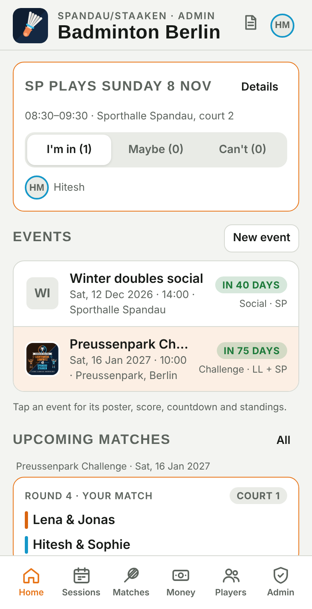
Home as an admin: next session, all events, upcoming matches, money, club card.
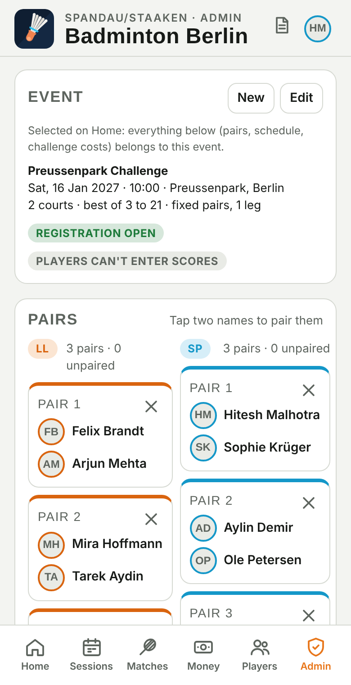
Admin tab: the selected event, pairs, schedule, players, admins.
2. Admins and rights
Admin — full control: events, pairs, schedule, scores, all costs, players, invites, settings. The first person who opened the live app claimed it; add more under Admin → Admins (choose a registered player → Add admin). Admin rights are tied to the device the person registered on.
Club admin — one or more per club (only a global admin assigns it: Players → tap the person → Club admin of …). A club admin adds members manually, invites, sets members inactive or reactivates them, gives the invite right, and edits the club's regular session and team rules. They see only their own club.
Invite right — a member may invite others without being admin: Players → tap the person → tick May invite other players. They can only invite into their own club.
Member — registers, votes, edits their club's regular session, adds session costs and payments, enters attendance.
Guest — like a member but cannot change the club setup. A one-session guest sees only that session. Guests can be upgraded: tap the player → Make a full member.
Inactive members
Instead of deleting someone who stops coming, set them inactive (Players → person → Set inactive; club admins can do this for their club). An inactive member no longer sees sessions, votes, events, the schedule or other members' activity, is left out of pairs, attendance and cost splits — but keeps their profile and can still open the app to see their own costs, payments and balance. Reactivate brings everything back. Permanent Delete stays a global-admin action.
Being told when someone joins
Two ways: on Home, admins and club admins get a New members card listing everyone who registered since they last tapped "Mark seen" — tap a name to set rights or deactivate. In addition, the notification job (section 10) runs every hour and sends a push notification "Jonas Weber joined Spandau/Staaken" to the global admins and that club's admins who have notifications enabled.
Make one trusted person per club a club admin, and a second global admin as a backup, so the app is not dependent on a single phone.
3. Global settings
Admin → Event → Edit contains both the selected event's settings and the global ones:
Setting
What it does
App name
The header title ("Badminton Berlin").
Team names / short codes
Club names and the two-letter codes (LL, SP) used in tables.
Currency
Symbol used for all amounts.
Open registration
On: anyone with the link can register and pick a club. Off: invite only — registration needs an invite link or code.
Registered players may enter scores
Off (default): only admins enter results. On: any registered player may save a score.
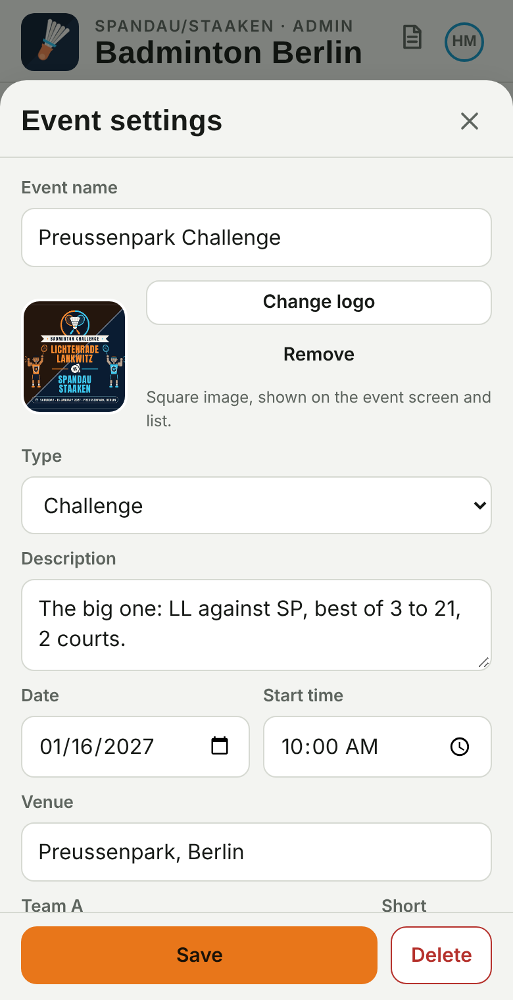
Per-event settings on the same form
Name, logo, type, description, date, time, venue
Clubs taking part
Courts, schedule format (fixed pairs / rotation), legs, matches per player
Best of 1/3/5, points per game (21 / 15 / 11)
House rules text shown on the Rules page
Delete event (removes its pairs, schedule and challenge costs)
4. Inviting people
Players → Invite someone (admins and members with the invite right).
Choose the club (admins) and the kind: Club member, Guest of the club, or Guest for one session (pick the session).
Optionally the person's name, how long the link is valid (7/30/90 days) and how many people may use it (1, 5 or 20 — a 20-use link is handy to post in the club's WhatsApp group).
Tap Create invite link. Copy the text or tap Share… to send it via WhatsApp or any app. The invitee opens the link, taps Register and join, enters name and photo — club (and session) are preset, and a session guest is automatically marked "I'm in".
Your invites are listed below the form with their status; delete one to revoke it.
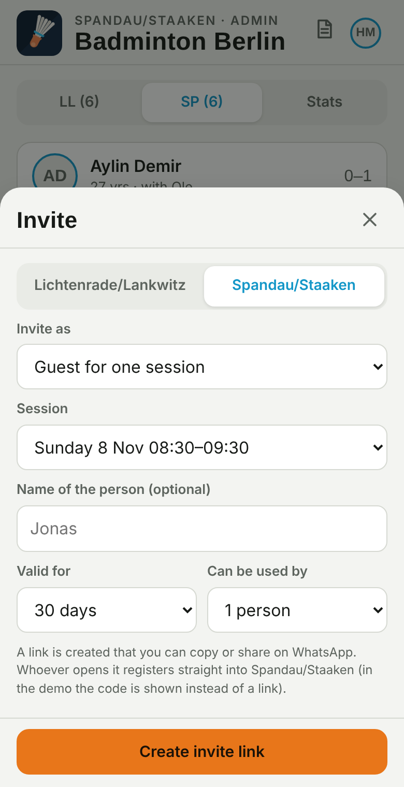
Creating a one-session guest invite.
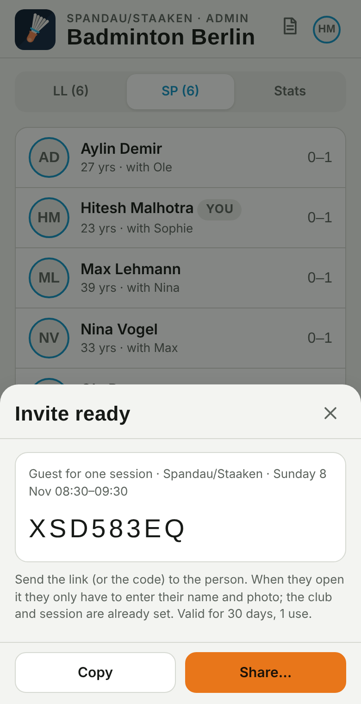
The code and link, ready to copy or share.
Invite only: switch off "Open registration" once both squads are in, so nobody random with the link can join. Invite links still work.
5. Club sessions and reminders
Sessions → Regular session → Edit (admins see both clubs; members their own):
Day, from/to, place, address — tap Find on map to pin the hall; players get a Directions link.
Reminder day — the morning the "who's coming?" push notification goes out (default Friday).
Team rules — free text shown on Home and in Club rules (court fee, who books, shuttles, cancellation deadline).
The next session is created automatically; cancel a week or add a one-off session with the buttons on the Sessions tab. After the session, tick Who played — the cost split uses that list.
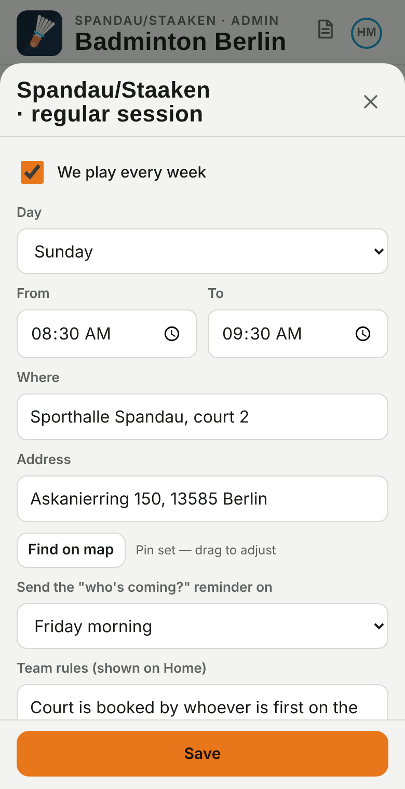
Push notifications
Every phone that taps Enable notifications (Sessions → Reminders) receives the reminder. The sending job runs on GitHub every morning at 07:00 Berlin time and sends on each club's reminder day. It needs the one-time FIREBASE_SERVICE_ACCOUNT secret (section 10). You can test it: GitHub → Actions → "Weekly session reminder" → Run workflow → force = true.
iPhone users must have the app on the home screen for notifications to work.
Away members
A member who is away for weeks (travel, injury, exams) sets I'm away on their profile — or you set it for them (player sheet → Set away). They are marked "Can't" on every session in that period, get no session reminders, and show "away" in the lists; nothing else changes (balances, fees, membership). "Back" ends it.
Club logo
Club setup → Add club logo (square image). Members of the club then see it in the app header instead of the generic shuttlecock; the header line shows only their own club. Global admins keep the generic logo.
Votes for others and the vote deadline
Open a session (Sessions → Votes) to set Yes / ? / No for any member who couldn't vote themselves — also after the deadline. Each change is in the activity log.
Club setup → Votes close: weekday and time (e.g. Saturday 14:00). From then on members see "Votes closed" and their own vote; only you can change votes. A single session can get its own deadline under Edit session.
Members can read the whole workflow in the app itself: the ? icon in the header opens "How the app works"; new members see a "New here?" card on Home.
6. Events
Clubs
Admin → Clubs lists the clubs with their members and club admins. Add club: name, a 2–4 letter code and a colour. Then Players → Invite someone for that club, send the link to its organiser, and after they register tick Club admin on them — they set up their own session, hall, rules and money mode. Club names and codes are edited here too (the founding clubs included).
Sign-ups and who organises what
An event is for one club (within-club: fixed pairs play every other pair, or a rotation where four players meet per match and everyone plays equally) or for two clubs (team against team, as in the challenge).
Members join an event on its screen ("Who's playing"); organisers and club admins can add or remove people there too. Pairs, rotation and the schedule use the people who joined. Until someone joins, all members count — the Admin tab warns you.
Edit event → "Members can sign up / leave themselves" closes sign-up early; it closes automatically on the event day.
Club admins have a Manage tab: they create events for their own club only and organise those fully (pairs, schedule, scores, costs). Events shared between clubs (like the challenge) are organised by the global admins. Members see only their own club under Players; the other club's players appear on shared events.
Home or Admin → New event: name, optional logo, type, courts, date, start, venue, clubs taking part, description, match format, matches per player, best of. Tap an event on Home to select it — everything in Admin, Matches and the challenge money then belongs to that event. The poster of the Preussenpark Challenge is its event logo; other events get their own logo or initials.
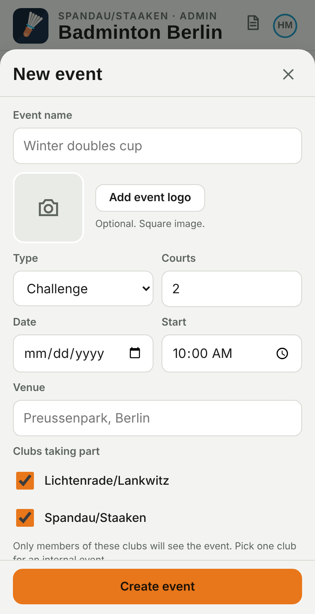
Two schedule formats
Fixed pairs — you build pairs; every pair plays every pair of the other club (1 or 2 legs). Count = LL pairs × SP pairs.
Rotation (Davis Cup style) — no fixed pairs. Set a target "matches per player"; the app sizes the schedule so every player of a club plays exactly the same number of matches, with partners from the same club rotating and opponents changing each round. Example: 6 vs 5 players → 15 matches, every LL player 5, every SP player 6.
7. Pairs and the schedule (fixed-pairs format)
Admin → Pairs: tap two team-mates to pair them, or Random pairs / Pair by age (oldest with youngest). Odd player = substitute.
Read the Schedule card: it tells you the number of matches, matches per pair and rounds on your courts before you commit.
Generate schedule. Rounds are built so no pair plays twice in a round. Add single matches by hand or edit round/court inside a match.
Regenerating or clearing removes entered scores — the app warns you.
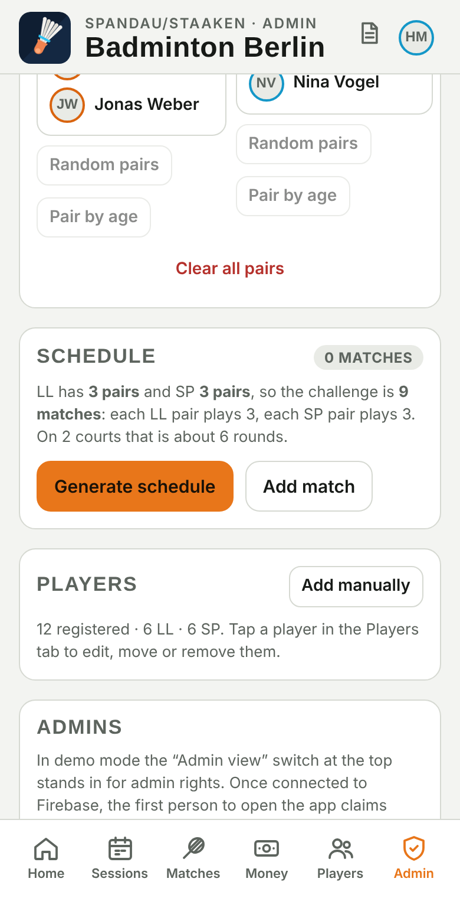
The schedule card does the maths before you generate.
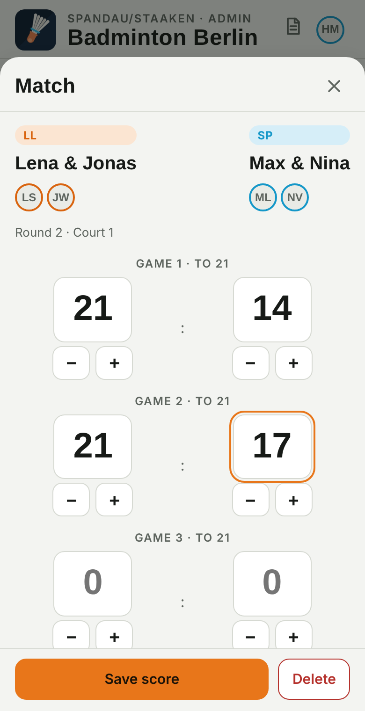
Score sheet with per-game inputs and walkover.
8. Match day: scores
Matches → tap the match → enter each game → Save score. Final is detected automatically (21 with 2-point lead, cap 30; first to 2 games). A walkover can be awarded.
Standings (Sp · S · N · Sätze · Bälle), the player table and the head-to-head grid update live. Tie-break order: match wins → games difference → points difference → captains' decider.
Make one scorer per court an admin, or switch on "players may enter scores" for self-reporting.
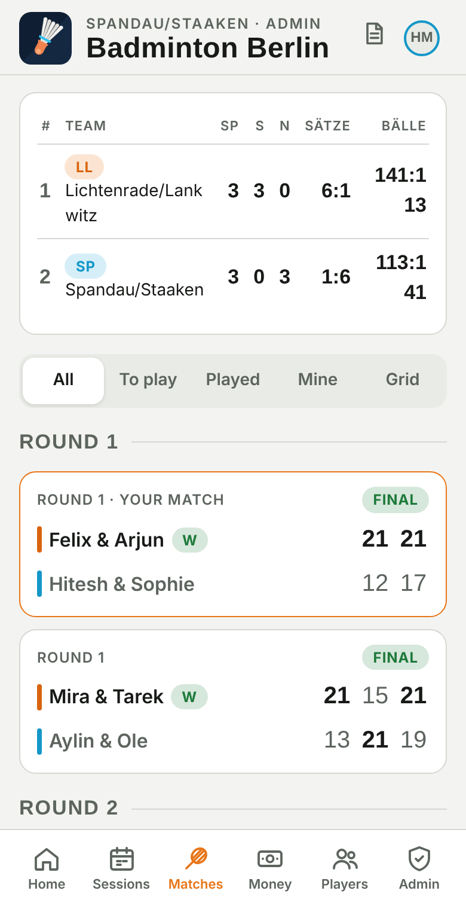
Schedule and results.
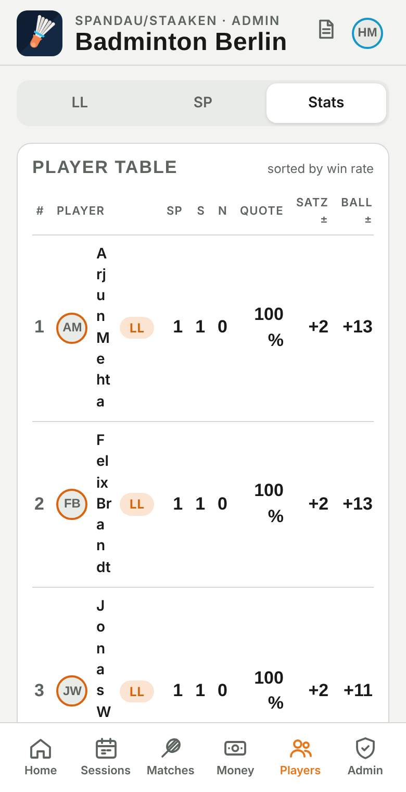
Player table.
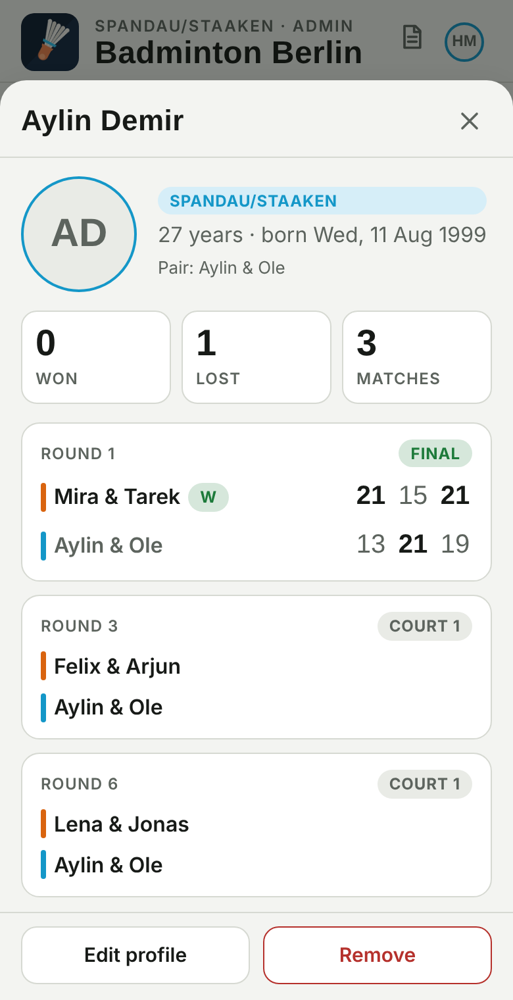
Player sheet (admin): invite right, remove, make member.
9. Money
Challenge costs (Money → the event): admins add court hire, shuttles, prizes; split across everyone or one club; everyone sees total, per-head share, their balance and a settle-up list.
Club session costs (Money → "LL/SP sessions"): any member adds a cost with who paid and who shares it (defaults to who played that session); payments between members are recorded with Record payment or the Paid button on a suggestion. Balances are per club and never mix with the challenge.
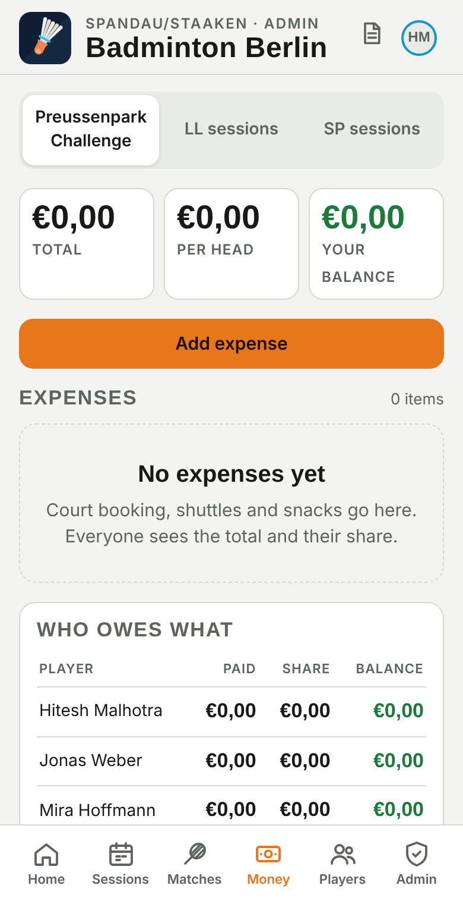
Challenge money.
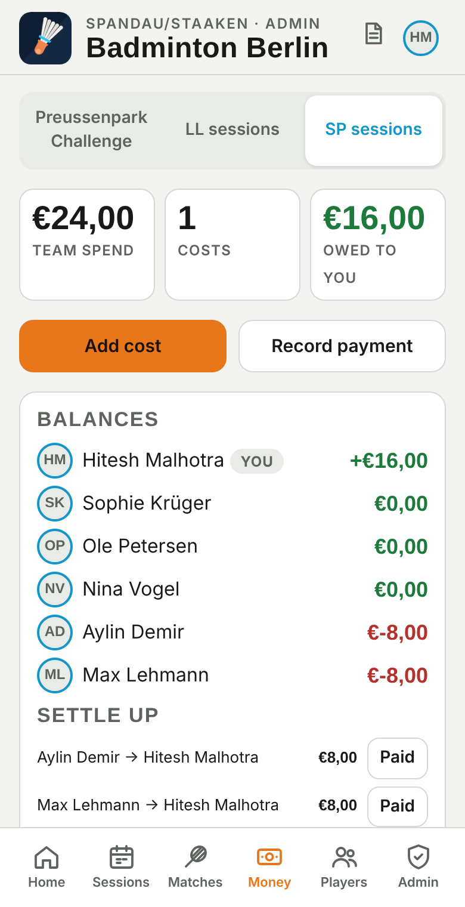
Club money with balances and settle-up.
Pay links
Members can add a PayPal.me name and/or IBAN under Edit profile → Payment details. Whoever owes them then sees a Pay button on the settle-up line: it opens PayPal with the amount filled in, or shows the IBAN with a copy button and a GiroCode QR that banking apps scan. "Mark as paid" records the payment. Ask members to add their details once — it removes most of the chasing.
Payment requests
Any member can Request money from a club-mate who owes them (settle-up line or Money → Request money). The payer gets a push notification (within ~20 minutes) and a Home banner with Pay / Decline; the requester sees the status and can Remind. In monthly-fee mode the treasurer requests outstanding fees the same way. Everything is in the activity log.
Monthly fee instead of per-session splits
Club setup (Sessions → Edit, or Home club card → Edit) → How costs are shared → Monthly fee. Set the fee per member per month, the month it starts and a treasurer. Then:
Every member (not guests) owes the fee each month from the month they joined. Money shows the club pot, fees outstanding and each member's balance; the treasurer (or a club admin) taps Paid when someone has paid.
Court and shuttle costs are added as paid from the club pot (the default). If a member advances a cost from their own pocket, pick them as "paid by" — the club then owes it back to them.
Untick "paid from the club pot" on a single cost to split it between specific people, e.g. a dinner.
The treasurer records their own fee as a payment to themselves. Switching modes keeps all existing costs and balances.
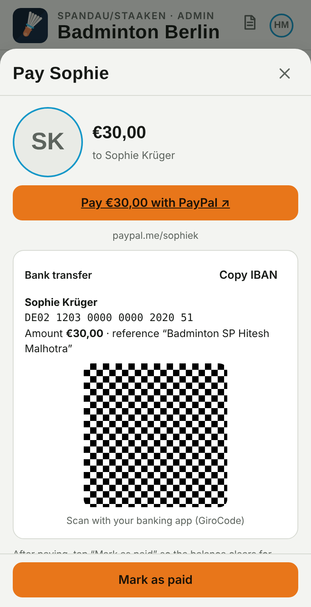
Pay sheet: PayPal link, IBAN and GiroCode.
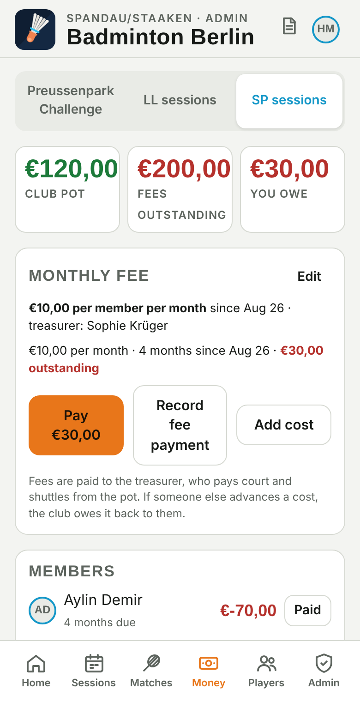
Monthly-fee club: pot, outstanding fees, members.
Reports and statements
Admin → Open club report (club admins: the "Report" button on their Home club card or on the Sessions tab). Choose the club and the period (30 / 90 days, 1 year, all).
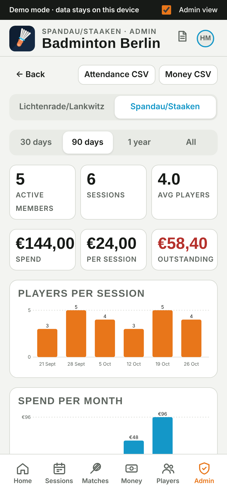
KPIs, players per session, spend per month and by category.
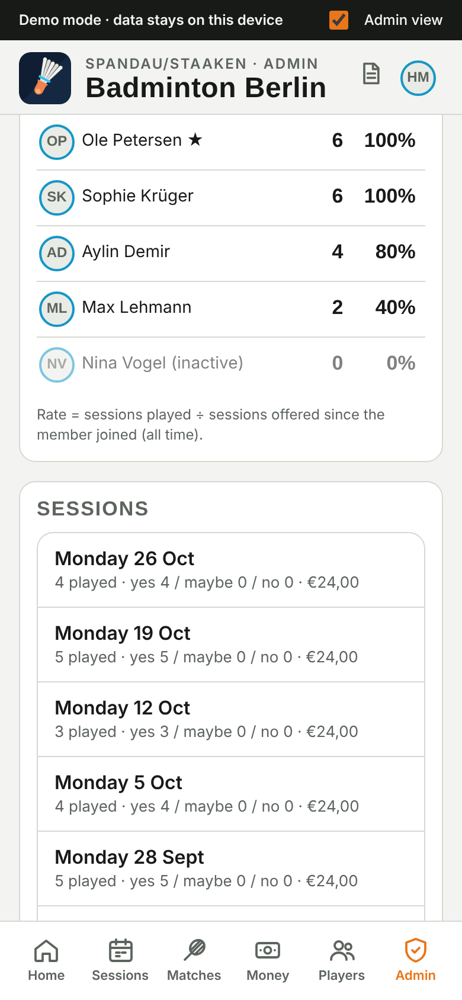
Member table: played, attendance rate, paid, share, balance, last played; sessions list; event results.
KPIs: active members, sessions held, average players per session, spend, spend per session, outstanding money (sum of negative balances).
Charts: players per session (last 12), spend per month (6 months) with category totals.
Members: tap a name to open the player sheet; ★ marks club admins; inactive members are greyed.
Export: Attendance CSV (one row per member, one column per session with 1 = played or the vote) and Money CSV (every cost and payment). Open in Excel or Google Sheets.
Statement (PDF): a printable club statement for the chosen period (members, costs, payments, sessions). Each member has their own statement under My history; you can open a member's statement from their player sheet. Use the browser's Print → Save as PDF.
When a season has been closed, the period filter gets a Season option (default) and past seasons are listed at the bottom.
Every member has their own My history page (player guide, section 5).
Activity log, backup, seasons, account
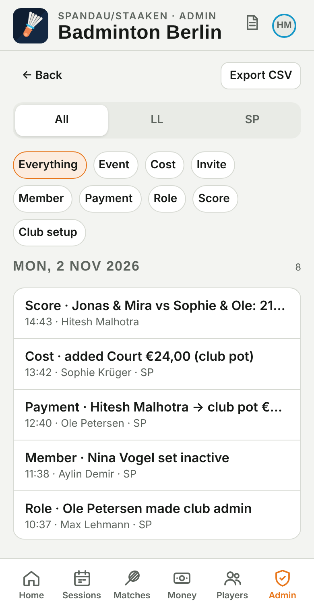
Activity log, filtered by club and type.
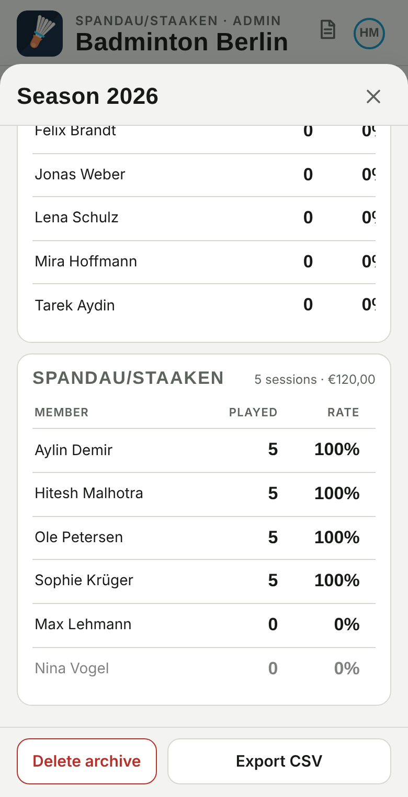
An archived season.
Activity log (Admin → Activity log): who entered which score, cost or payment, who changed members, roles, invites, events, schedules and club settings — with time and name. Club admins see their club's entries. Export CSV. Entries cannot be edited or deleted.
Backup (Admin → Download JSON): every collection in one file. Keep a copy after the challenge or once a month. If something is ever deleted by mistake, the data can be restored from it in the Firebase console.
Seasons (Admin → Close season): name it, set the dates, close. The app stores a frozen snapshot (per club: sessions, spend, every member's played/rate/paid/share; events with scores and top players). From the next day, history and reports show the new season by default (switch to "All time" any time). Balances are not reset. Members see their own past-season lines under My history.
Your account — connect Google: profiles and admin rights are tied to the device until a Google account is connected (recommended at registration via Continue with Google, or later from the profile / Admin → Your account). After that, Sign in with Google on any device brings the profile, history and admin rights back. Members who haven't connected see a reminder card on Home. On iPhone, register and link in Safari before adding the app to the home screen, or link again from the home-screen app (it has its own storage).
Free tier; data visible and editable in the Firebase console. Security rules live in firestore.rules and are published in the console's Rules tab.
Sign-in
Firebase Authentication: Anonymous + Google
Each phone gets an ID on first open; profiles and admin rights hang on that ID. Linking Google keeps the same ID, so it can be restored on another device.
Needs secret FIREBASE_SERVICE_ACCOUNT: Firebase → Project settings → Service accounts → Generate new private key → paste the JSON into GitHub → Settings → Secrets and variables → Actions.
Push keys
Firebase Cloud Messaging, Web Push certificate
Public key is in index.html; the service worker (sw.js) shows the notification.
Guides
docs/ in the repo
These PDFs; also linked from the app's rules page.
11. Troubleshooting
Symptom
Fix
Someone sees no events
They are not registered, or their club is not in the event's "clubs taking part". Check Admin → Event → Edit.
Duplicate player
Players → tap → Delete (global admin) or Set inactive. A person who changed phone should use Restore with their linked Google account; otherwise they register again on the new one.
Google sign-in popup doesn't open
On an iPhone home-screen app the popup can be blocked; the app then uses a redirect. If that fails too, link in Safari (open the site URL) and restore in the home-screen app.
Who changed this?
Admin → Activity log, filter by club or type.
Old version on a phone
Close and reopen the app, or pull to refresh. Remove and re-add to the home screen to refresh the icon.
No reminder arrived
Phone has not enabled notifications; iPhone app not on home screen; GitHub secret missing; or it isn't the club's reminder day. Run the workflow with force = true to test.
"Permission" error
The action isn't allowed for that role (e.g. a guest editing the club setup). Admins can do it.
Wrong score saved
Open the match again, correct the games, Save.
Start over for a new season
Create a new event; clear pairs/schedule; remove players who left. Or create a fresh Firebase project and paste its config into index.html.